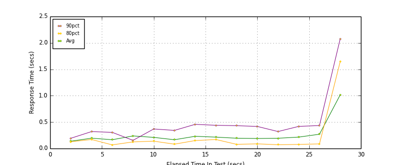
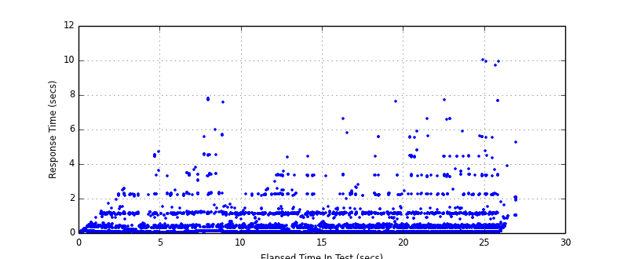
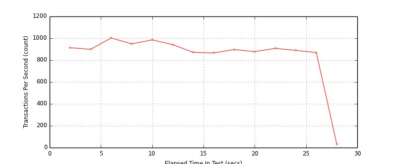

Performance Results Report
Summary
transactions: 24005
errors: 0
run time: 30 secs
rampup: 0 secs
test start: 2014-10-11 20:50:15
test finish: 2014-10-11 20:50:42
time-series interval: 2 secs
workload configuration:
| group name | threads | script name |
|---|
| user_group-1 | 10 | v_user.py |
| user_group-2 | 20 | v_user.py |
| user_group-3 | 20 | v_user.py |
| user_group-4 | 20 | v_user.py |
| user_group-5 | 20 | v_user.py |
| user_group-6 | 20 | v_user.py |
| user_group-7 | 20 | v_user.py |
| user_group-8 | 20 | v_user.py |
| user_group-9 | 20 | v_user.py |
| user_group-10 | 20 | v_user.py |
All Transactions
Transaction Response Summary (secs)
| count | min | avg | 80pct | 90pct | 95pct | max | stdev |
|---|
| 24005 | 0.024 | 0.204 | 0.129 | 0.352 | 1.126 | 10.055 | 0.507 |
Interval Details (secs)
| interval | count | rate | min | avg | 80pct | 90pct | 95pct | max | stdev |
|---|
| 1 | 1829 | 914.50 | 0.024 | 0.138 | 0.128 | 0.194 | 0.426 | 1.750 | 0.178 |
| 2 | 1799 | 899.50 | 0.043 | 0.196 | 0.171 | 0.320 | 1.138 | 2.603 | 0.371 |
| 3 | 2006 | 1003.00 | 0.048 | 0.166 | 0.068 | 0.305 | 0.470 | 4.716 | 0.467 |
| 4 | 1899 | 949.50 | 0.053 | 0.238 | 0.125 | 0.154 | 1.160 | 7.809 | 0.638 |
| 5 | 1970 | 985.00 | 0.052 | 0.211 | 0.139 | 0.370 | 1.107 | 7.611 | 0.490 |
| 6 | 1885 | 942.50 | 0.052 | 0.166 | 0.082 | 0.343 | 1.099 | 2.596 | 0.317 |
| 7 | 1743 | 871.50 | 0.046 | 0.231 | 0.150 | 0.458 | 1.150 | 4.386 | 0.482 |
| 8 | 1733 | 866.50 | 0.043 | 0.215 | 0.170 | 0.440 | 1.155 | 4.442 | 0.379 |
| 9 | 1794 | 897.00 | 0.051 | 0.195 | 0.079 | 0.432 | 1.155 | 6.644 | 0.441 |
| 10 | 1757 | 878.50 | 0.058 | 0.190 | 0.088 | 0.418 | 1.125 | 7.634 | 0.460 |
| 11 | 1817 | 908.50 | 0.054 | 0.194 | 0.071 | 0.321 | 0.555 | 6.648 | 0.590 |
| 12 | 1778 | 889.00 | 0.057 | 0.216 | 0.077 | 0.419 | 1.150 | 7.719 | 0.603 |
| 13 | 1741 | 870.50 | 0.057 | 0.270 | 0.087 | 0.435 | 1.162 | 10.055 | 0.819 |
| 14 | 64 | 32.00 | 0.300 | 1.015 | 1.644 | 2.075 | 2.097 | 5.277 | 0.877 |
Graphs
Response Time: 2 sec time-series

Response Time: raw data (all points)

Throughput: 5 sec time-series

Custom Timer: response_time
Timer Summary (secs)
| count | min | avg | 80pct | 90pct | 95pct | max | stdev |
|---|
| 23815 | 0.024 | 0.204 | 0.129 | 0.352 | 1.126 | 10.055 | 0.507 |
Interval Details (secs)
| interval | count | rate | min | avg | 80pct | 90pct | 95pct | max | stdev |
|---|
| 1 | 1829 | 914.50 | 0.024 | 0.138 | 0.128 | 0.194 | 0.426 | 1.750 | 0.178 |
| 2 | 1799 | 899.50 | 0.043 | 0.195 | 0.170 | 0.320 | 1.138 | 2.603 | 0.371 |
| 3 | 2006 | 1003.00 | 0.048 | 0.166 | 0.068 | 0.305 | 0.470 | 4.716 | 0.467 |
| 4 | 1899 | 949.50 | 0.053 | 0.238 | 0.125 | 0.154 | 1.160 | 7.809 | 0.638 |
| 5 | 1970 | 985.00 | 0.052 | 0.211 | 0.139 | 0.370 | 1.107 | 7.611 | 0.490 |
| 6 | 1885 | 942.50 | 0.052 | 0.166 | 0.082 | 0.343 | 1.099 | 2.596 | 0.317 |
| 7 | 1743 | 871.50 | 0.045 | 0.231 | 0.150 | 0.457 | 1.150 | 4.386 | 0.482 |
| 8 | 1733 | 866.50 | 0.043 | 0.215 | 0.170 | 0.439 | 1.155 | 4.442 | 0.379 |
| 9 | 1794 | 897.00 | 0.051 | 0.195 | 0.079 | 0.432 | 1.155 | 6.644 | 0.441 |
| 10 | 1757 | 878.50 | 0.057 | 0.190 | 0.088 | 0.418 | 1.125 | 7.634 | 0.460 |
| 11 | 1817 | 908.50 | 0.054 | 0.194 | 0.071 | 0.321 | 0.555 | 6.648 | 0.590 |
| 12 | 1778 | 889.00 | 0.057 | 0.216 | 0.077 | 0.419 | 1.150 | 7.719 | 0.603 |
| 13 | 1741 | 870.50 | 0.057 | 0.270 | 0.087 | 0.435 | 1.162 | 10.055 | 0.819 |
| 14 | 64 | 32.00 | 0.300 | 1.015 | 1.644 | 2.075 | 2.096 | 5.277 | 0.877 |
Graphs
Response Time: 2 sec time-series
Response Time: raw data (all points)
Throughput: 2 sec time-series